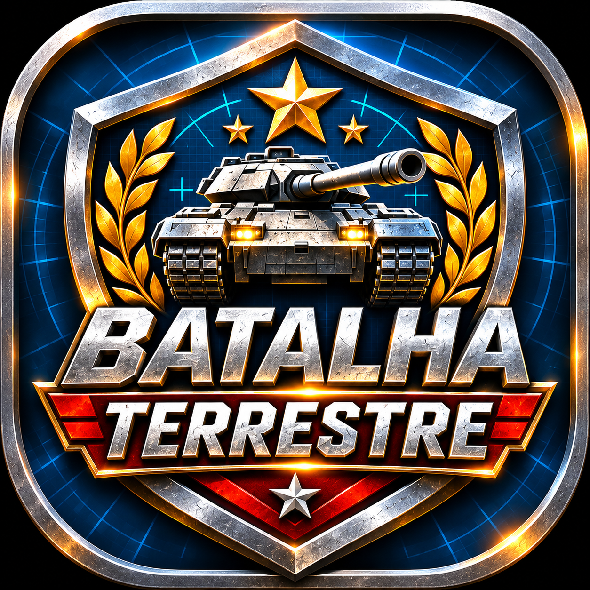
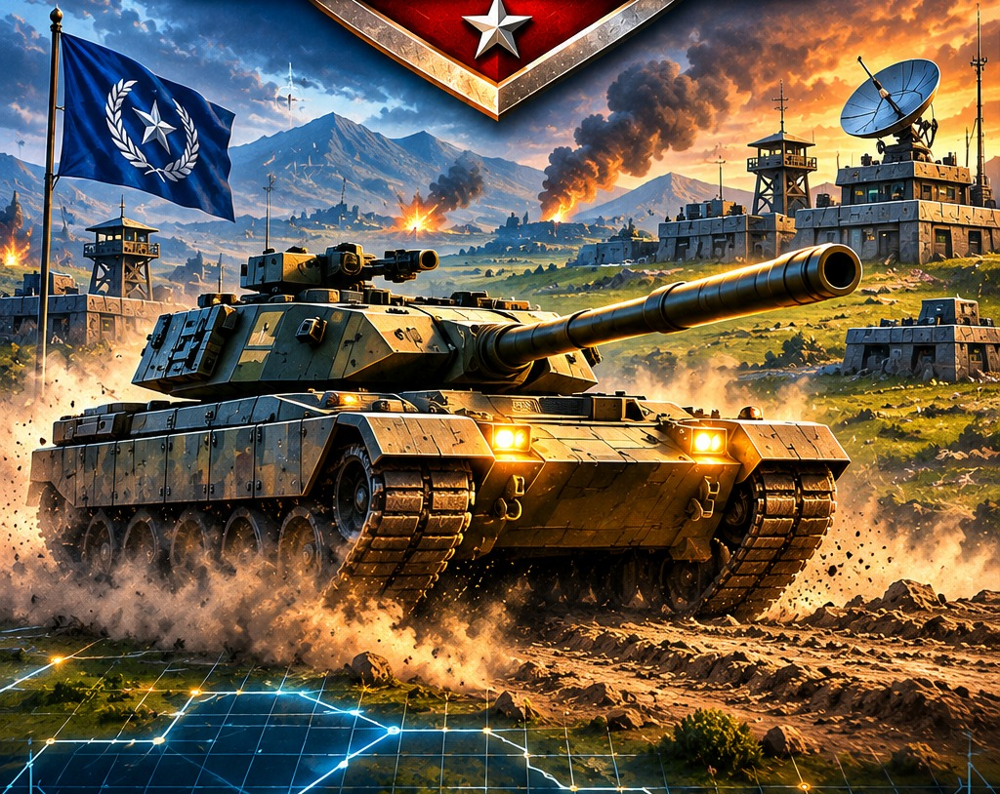
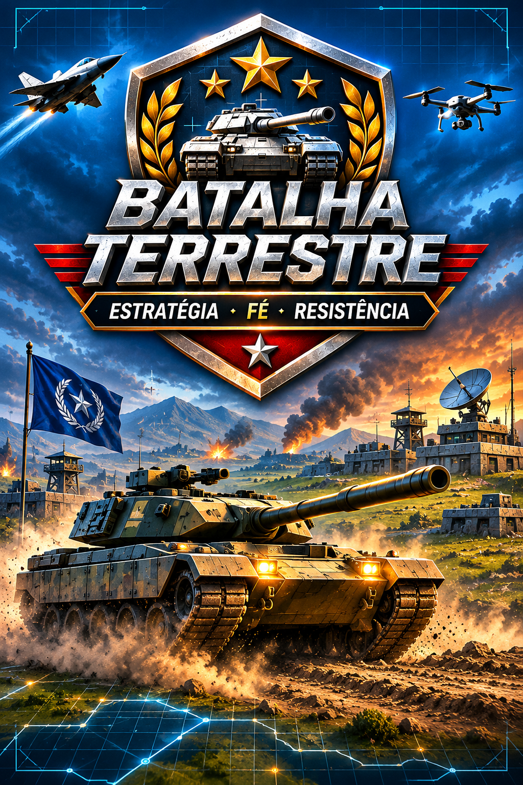
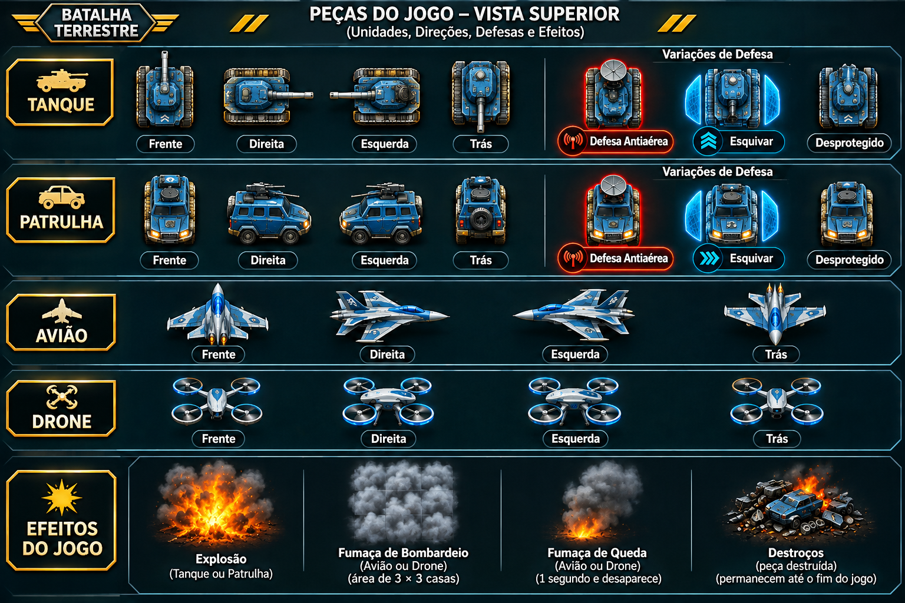

ESTRATÉGIA • FÉ • RESISTÊNCIA


Campo 16 colunas × 10 linhas. Todas as unidades começam na reserva. Cada equipe começa com 10 tanques e 10 patrulhas na reserva.

CAMPO DE BATALHA
Escolha uma unidade na reserva ou no tabuleiro.